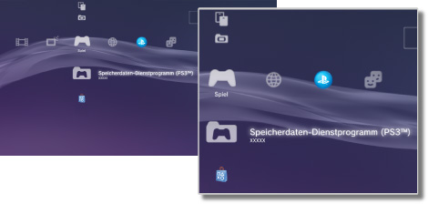

Spiel > Spiel-Kategorie
Spiel-Kategorie
Die folgenden Icons werden unter  (Spiel) angezeigt. Welche Icons angezeigt werden, hängt von den Nutzungsbedingungen ab.
(Spiel) angezeigt. Welche Icons angezeigt werden, hängt von den Nutzungsbedingungen ab.

 |
PlayStation®Store | Anzeigen von Informationen aus dem PlayStation®Store. |
|---|---|---|
 |
Spiel verlassen | Beenden von Software im PlayStation®3-Format. Dieses Icon wird nur beim Spielen angezeigt. |
 |
(Name des Titels) | Spielen eines Softwaretitels im PlayStation®3-Format. Ein Bild wird angezeigt, wenn das Icon ausgewählt wird. |
  |
DVD/CD-ROM im PlayStation®2-Format | Spielen eines Softwaretitels im PlayStation®2-Format. |
 |
DVD/CD-ROM im PlayStation®-Format | Spielen eines Softwaretitels im PlayStation®-Format. |
 |
Speicherdaten-Dienstprogramm (PS3™) | Kopieren und Löschen von Speicherdaten für Software im PlayStation®3-Format oder Anzeigen von Informationen dazu. |
 |
Speicherdaten-Dienstprogramm (minis / PSP™) | Kopieren, Löschen oder Anzeigen von Informationen zu Speicherdaten für minis und PSP™Game (PSP™-Spiele)-Software. |
 |
Memory Card-Dienstprogramm | Erstellen und Zuweisen von Steckplätzen für interne Memory Cards, um Daten für Software im PlayStation®2-/PlayStation®-Format zu speichern. Sie können auch Speicherdaten kopieren und löschen oder Informationen dazu anzeigen. |
 |
PS Vita-System-Anwendungshilfsprogramm | Bei der Sicherung der gespeicherten Daten der ausgeführten Spiele auf dem PS Vita-System oder der Anwendungsdaten (Spieledaten) vom PS Vita-System auf das PS3™-System werden die Daten im PS Vita-System-Anwendungshilfsprogramm gespeichert. |
|
Spieldaten-Dienstprogramm | Bei manchen Spielen können zusätzliche Daten gespeichert werden. Sie können Daten löschen oder Informationen dazu anzeigen. |
 |
(im Systemspeicher installierte Software im PlayStation®3- oder PlayStation®2-Format) | Im Systemspeicher installierte Software im PlayStation®3- oder PlayStation®2-Format. Ein Miniaturbild für das Spiel wird angezeigt. |
 |
(in den Systemspeicher heruntergeladene Daten) | Dieses Icon wird bei in den Systemspeicher heruntergeladenen Spiel- oder Erweiterungsdaten angezeigt. Beim Aufrufen werden die Daten installiert. Das Icon variiert je nach Datentyp. |
Anmerkungen
 oder
oder  wird angezeigt, wenn die Inhalte durch die Kindersicherung gesperrt sind. Wenn Sie ein vierstelliges Passwort eingeben, können die Inhalte gespielt werden. Das Passwort können Sie unter
wird angezeigt, wenn die Inhalte durch die Kindersicherung gesperrt sind. Wenn Sie ein vierstelliges Passwort eingeben, können die Inhalte gespielt werden. Das Passwort können Sie unter  (Einstellungen) >
(Einstellungen) >  (Sicherheits-Einstellungen) definieren.
(Sicherheits-Einstellungen) definieren.- Wenn ein Gerät, das nicht mit dem HDCP (High-bandwidth Digital Content Protection)-Standard kompatibel ist, über ein HDMI-Kabel an das System angeschlossen wird, können Bild und/oder Ton nicht vom System ausgegeben werden.
- Kopiergeschützte Inhalte auf einer Blu-ray Disc können nur mit 1080p ausgegeben werden, wenn Sie dieses System mit einem HDMI-Kabel an ein Gerät anschließen, das mit dem HDCP-Standard kompatibel ist.
- In seltenen Fällen kann es vorkommen, dass Discs und andere Datenträger auf dem PS3™-System nicht einwandfrei wiedergegeben werden. Dies ist hauptsächlich auf Abweichungen im Herstellungsverfahren oder bei der Software-Codierung zurückzuführen.
Hinweise
- Einige Softwaretitel im PlayStation®2- oder PlayStation®-Format werden auf dem PS3™-System anders als auf einem PlayStation®2- oder PlayStation®-System ausgeführt oder sie werden auf dem PS3™-System nicht ordnungsgemäß ausgeführt.
- Discs im PlayStation®2-Format können auf einigen PS3™-Systemen nicht abgespielt werden. Näheres dazu finden Sie unter [Typen abspielfähiger Discs] oder auf der SIE-Website für Ihre Region. Sie können auch in der Dokumentation zum PS3™-System nachschlagen.